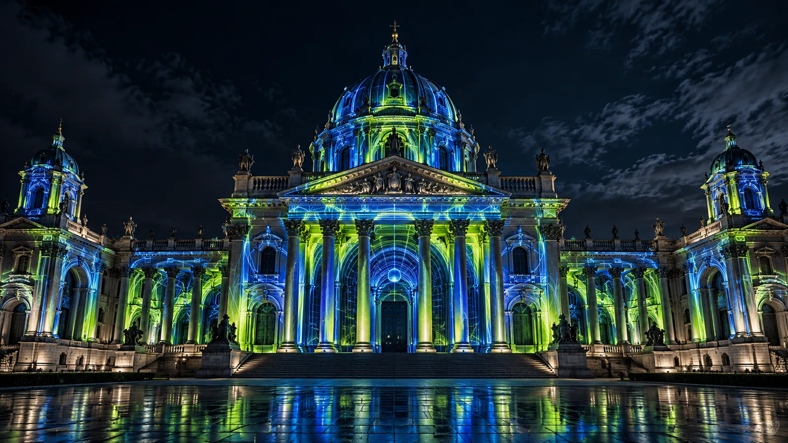

How projection mapping transforms architecture into a living canvas
A building is never a blank rectangle. Its columns, arches, windows and history become the rules—and the creative opportunity.

Projection mapping makes a physical surface behave like a moving image. The basic idea sounds simple: build content for the exact shape of a structure, then align projected light to it. A convincing show, however, begins long before the projector switches on. It combines architectural study, visual storytelling, technical planning and careful operation on site.
When those parts support one another, the audience stops noticing the equipment. Stone can appear to fold, columns can pulse with light, and a familiar landmark can reveal an entirely new personality.
Start with the surface
Every façade has its own visual grammar. Repeating windows create rhythm. A central arch offers a focal point. Domes invite radial motion, while long horizontal wings can carry a story across the building.
The first task is to document that surface accurately. Plans, photographs, drone images and laser measurements can all help. The goal is a reliable digital model or template that gives the content team the same proportions they will meet on site. Any error here becomes visible later as broken edges, drifting lines or light spilling beyond the architecture.
The architecture is not merely a screen. It is the first character in the story.
Design for distance and darkness
Content viewed on a laptop behaves differently when projected onto a monument from hundreds of metres away. Fine details disappear. Dark tones may be absorbed by stone. Bright nearby lighting can reduce contrast.
Strong mapping design uses clear silhouettes, deliberate contrast and movement that remains readable from the audience area. The creative team tests scenes at representative viewing sizes and plans around the real surface colour. A pale building may return plenty of light; red brick or dark stone demands a different palette and more careful projector calculations.
Build a story the building can perform
A sequence should feel made for its site. One useful approach is to move from recognition to transformation. Let the audience first understand the building, then gradually bend its rules: reveal hidden depth, separate architectural layers, dissolve the material and rebuild it in a new visual language.
Music, sound design and pacing are developed alongside the pictures. Large architectural moments often need time to land. Constant visual intensity can flatten the experience, so quieter passages give scale to the next reveal.

Previsualize the complete system
Technical previsualization answers practical questions before installation. Where can projectors be placed? What lens throw is available? How much brightness reaches each part of the surface? Where will multiple images overlap?
The team calculates resolution, brightness, coverage and redundancy for the actual venue. Media servers, signal paths and backup plans are designed as one system. These decisions shape the content canvas, so production and design teams need to communicate early.
Calibrate on the real façade
On site, every projector is aligned to the same digital model. The team warps the image to architectural features, blends overlaps and balances colour between machines. Test grids make small errors easy to see. Final content tests reveal how the surface reflects different colours and how ambient light affects black levels.
This stage needs time. Weather, access restrictions and public areas can shorten the setup window, so a clean technical plan matters as much as creative ambition.
Operate the show as a live event
A finished file does not guarantee a finished experience. The operator monitors playback, temperature, signal health and synchronization throughout the show. A practical system includes tested fallbacks and a clear response for a failed output or interrupted signal.
The best result feels effortless because the complexity stays behind the image. Viewers see a landmark come alive; the team sees hundreds of creative and technical choices arriving at the same moment.
The AKS approach
At AKS Creative Studio, we treat projection mapping as a conversation between story, surface and audience. We begin with the physical character of the site, design moments that remain clear at architectural scale, and carry the idea through previsualization, content production and live delivery.
Explore our selected projection mapping work to see how that approach changes across monuments, heritage buildings and live events.
Have a building in mind?
Tell us about the surface, location, audience and event. We will help shape the right visual and technical direction.
Start a conversation ↗